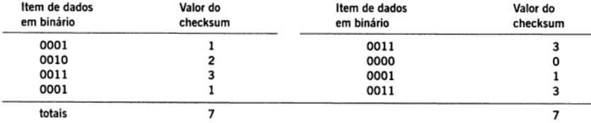

Checksum
Detecção e Correção de Erros
Created by
Psycho Mantys / @psycho_mantys
Poliana Belo
Checksum
Embora muitos métodos de detecção tenham sido inventados, apenas alguns poucos são usados
Um dos métodos mais utilizados é o checksum
Algoritmo do Checksum
Objetivo:
Detectar “erros” (ex.: bits trocados) num segmento transmitido (nota: usado apenas na camada de transporte)
Algoritmo do Checksum
Transmissor:
- Trata o conteúdo da mensagem como seqüências de números inteiros de 16 bits (bits de dados)
- Os bits de dados são divididos em k blocos de n bits, cada um
- Checksum: soma dos blocos e realiza o complemento de um
- Transmissor coloca o valor do checksum no campo checksum do datagrama (UDP)
Algoritmo do Checksum
Receptor:
- Os bits recebidos são divididos em k blocos de n bits
- Calcula o checksum da mensagem recebida, ou seja, soma os blocos e complementa o resultado (checksum)
- Verifica se o checksum calculado:
- Se o checksum for zero, os dados são aceitos!- Erro NÃO detectado

- Usado pelos protocolos IP, TCP e UDP
Vantagens e Desvantagens
Vantagens
As vantagens principais referem-se ao tamanho e à facilidade de computação. A maioria das redes que empregam essa técnica usa um checksum de 16 ou 32 bits e gera um checksum único para um pacote inteiro. O tamanho pequeno do checksum significa que o seu custo de transmissão é muito menor do que o de transmitir os daddos. Além disso, como o checksum só exige adição, o processamento necessário para criá-lo o verificá-lo é pequeno.
Desvantagens
O checksum tem a desvantagem de não detectar todos os erros comuns. Por exemplo, a tabela na Figura abaixo mostra que um checksum não é suficiente para detectar um erro de transmissão que inverte um bit em cada um de quatro itens de dados (para estender o exemplo para um pacote inteiro, imagine que os quatro itens modificados acontecem no meio de vários outros). Apesar das mudanças, um receptor declarará que o pacote tem um checksum válido.
